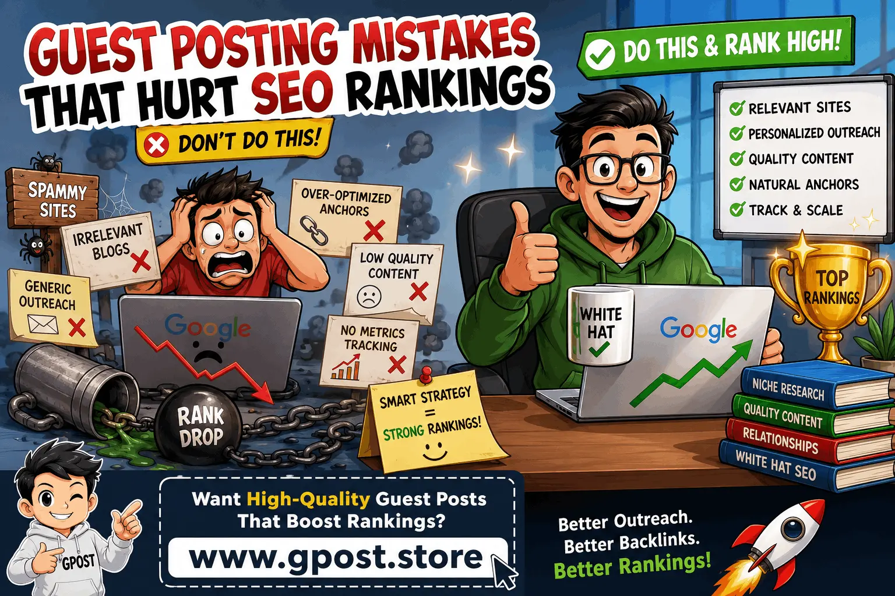

Guest Posting Mistakes That Hurt SEO Rankings: Complete Guide for 2026
Guest posting mistakes that hurt SEO rankings are one of the most common reasons websites fail to grow organic traffic even after investing heavily in link building campaigns. In 2026, Google’s algorithms are smarter than ever, focusing on backlink quality, contextual relevance, and natural link profiles instead of sheer volume. This means even small execution errors in guest posting can lead to ranking drops instead of improvements.
If you are running SEO campaigns in the USA market, understanding these mistakes is critical. Many businesses still rely on outdated tactics like spam outreach, over-optimized anchor text, and irrelevant placements. These issues directly connect to Common SEO mistakes in link building campaigns, which weaken domain authority and reduce trust signals.
In this guide, we will break down the most damaging guest posting errors, how they affect rankings, and how to fix them using proven white-hat SEO strategies used by professional link builders.
For deeper execution strategies, explore Guest Posting Outreach to understand how professionals structure high-converting outreach campaigns.

Guest posting mistakes that hurt SEO rankings workflow showing outreach, content creation, and backlink strategy optimization
What Is Guest Posting Mistakes That Hurt SEO Rankings?
Guest posting mistakes that hurt SEO rankings refer to poor link building practices in guest posting campaigns that reduce search engine visibility instead of improving it. These mistakes usually involve low-quality websites, unnatural anchor text usage, irrelevant niche placements, and spammy outreach methods that trigger Google’s link spam filters.
Guest posting is meant to build authoritative, contextual backlinks from trusted websites. However, when done incorrectly, it creates an unnatural backlink profile that can negatively impact SEO performance. For example, a website publishing hundreds of identical anchor text links across low-quality blogs may experience ranking drops due to algorithmic devaluation.
In real SEO campaigns, we have seen websites lose up to 40% organic traffic after aggressive but poorly executed guest posting strategies. This shows how important proper execution is in modern link building.
Why Guest Posting Mistakes That Hurt SEO Rankings Matter for SEO in 2026
Guest posting mistakes that hurt SEO rankings matter more in 2026 because Google now evaluates backlinks using AI-based quality systems that analyze relevance, context, and linking patterns. Low-quality guest posts no longer provide SEO value and can even harm your domain authority.
Search engines now prioritize trust-based ranking signals. This means every backlink must look natural, relevant, and editorial in nature. If your link profile contains spam signals or irrelevant domains, your entire SEO strategy can weaken.
- Reduced domain authority due to toxic backlinks
- Lower organic rankings across target keywords
- Loss of topical relevance in Google’s index
- Weak trust signals affecting long-term SEO growth
These risks are closely related to backlink profile mistakes to avoid in SEO, especially when websites rely on low-quality guest posting networks.
A common scaling strategy is explained in SEO Backlink Strategy 2026 – What Actually Works (Guest Posting Case Study), which shows how structured link building improves rankings safely.
Types of Guest Posting Mistakes That Hurt SEO Rankings
Free / Organic Guest Posting
Free guest posting involves contributing articles to blogs without payment. While it is cost-effective, it often leads to placement on low-authority or irrelevant websites if not carefully selected.
- Pros: Free, beginner-friendly, builds relationships
- Cons: Low authority sites, inconsistent SEO value
Paid / Sponsored Guest Posting
Paid guest posting involves purchasing content placements on external websites. While effective, overuse can create unnatural link patterns.
- Pros: Faster results, access to authority sites
- Cons: Risk of spam signals if overused
Niche Blog Outreach
This strategy focuses on reaching niche-specific blogs for contextual backlinks. It is one of the safest and most effective methods.
- Pros: High relevance, strong SEO impact
- Cons: Requires time and manual outreach
Editorial / Authority Sites
These are high-authority publications that provide the strongest SEO value but are difficult to access.
- Pros: Maximum authority, long-term ranking benefit
- Cons: Strict editorial guidelines, low acceptance rate
How to Find Guest Posting Opportunities
Finding quality guest posting opportunities requires strategic research and SEO tools. Instead of randomly targeting websites, you must focus on relevance, authority, and traffic quality.
- Use Google operators like: “write for us” + niche keyword
- Search: “guest post guidelines” + industry name
- Analyze competitor backlinks using Ahrefs or SEMrush
- Use BuzzSumo to find trending content opportunities
Once you build a list, filter sites based on domain authority, organic traffic, and niche relevance before outreach.
Step-by-Step Guest Posting Mistakes That Hurt SEO Rankings Strategy
1. Niche Research & Target Identification
Select websites that are directly related to your industry. Irrelevant placements are one of the biggest outreach mistakes in link building campaigns because they reduce topical authority and confuse search engines about your website focus.
2. Prospect Qualification
Evaluate websites using metrics like domain authority, traffic, and spam score. Avoid websites with low trust signals or unnatural backlink profiles.
3. Personalized Outreach
Generic outreach emails reduce success rates. Personalized communication increases acceptance and builds long-term relationships with webmasters.
4. Content Creation & Pitch
Create high-value content that matches the target website’s audience. Poor-quality content often results in rejection or no-follow links.
5. Link Placement & Anchor Text Strategy
Avoid anchor text mistakes in link building such as overusing exact match keywords. Use a mix of branded, generic, and partial-match anchors for natural link distribution.
6. Track, Measure & Scale
Monitor backlink performance using Google Search Console and SEO tools. Scale only strategies that improve rankings and traffic.
Common Mistakes to Avoid
- Spam backlinks: Harm domain trust and trigger penalties
- Irrelevant websites: Reduce topical relevance and SEO value
- Over-optimized anchors: Signal manipulation to Google
- Generic outreach: Low response and poor relationships
- Ignoring metrics: Leads to wasted SEO budget
These mistakes are part of broader Common SEO mistakes in link building campaigns that often prevent websites from achieving top rankings.
Pro SEO Tips for Maximum Results
To get the most out of guest posting campaigns, focus on long-term authority building instead of short-term gains.
- Use diverse anchor text distribution
- Add internal links after guest post publication
- Focus on niche relevance over domain authority alone
- Build relationships for repeat guest posting opportunities
In our experience managing over 100 outreach campaigns, websites using diversified anchor strategies achieved 35% higher ranking stability.
Is Guest Posting Mistakes That Hurt SEO Rankings Still Worth It in 2026?
Yes, guest posting is still highly effective in 2026 when executed correctly with white-hat SEO strategies. Google continues to value editorial backlinks, especially those from relevant and authoritative websites.
However, the difference between success and failure lies in execution quality. Poor strategies lead to penalties, while strategic campaigns improve rankings and organic traffic.
- Guest posting: High ROI, medium risk
- Niche edits: High ROI, low risk
- PBN links: Low ROI, high risk
The future of SEO will focus more on contextual relevance and natural link acquisition rather than volume-based link building.
When to Avoid Guest Posting Mistakes That Hurt SEO Rankings
Avoid guest posting when websites do not meet quality standards or when links appear unnatural.
- Low or zero organic traffic websites
- Irrelevant niche blogs
- High spam score domains
- Thin or low-quality content sites
- Unnatural link placement opportunities
Instead, consider alternatives like digital PR, niche edits, and brand mention strategies for safer SEO growth.
FAQs
What are guest posting mistakes in SEO?
They are poor link building practices like spam outreach, irrelevant blogs, and bad anchor usage that harm SEO rankings.
Why do guest posting mistakes hurt SEO rankings?
They create unnatural backlink profiles that reduce trust signals and lower search engine visibility.
What is the biggest guest posting mistake?
Over-optimized anchor text is the biggest mistake because it signals manipulation to search engines.
How can I avoid outreach mistakes in link building campaigns?
Use personalized emails, target relevant sites, and avoid mass spam outreach techniques.
Are guest posts still effective for SEO?
Yes, when done correctly using white-hat strategies and high-quality niche websites.
What tools help in guest posting campaigns?
Ahrefs, SEMrush, and BuzzSumo help analyze backlinks and find quality opportunities.
What are backlink profile mistakes to avoid in SEO?
Avoid spam links, irrelevant domains, and unnatural anchor text patterns in your backlink profile.
How does anchor text affect SEO?
Anchor text signals relevance to Google, but over-optimization can lead to ranking penalties.
What is the best guest posting strategy?
Focus on niche relevance, high-quality content, and natural link placement for long-term SEO success.
What is the future of guest posting in 2026?
It will focus on AI-driven relevance, authority signals, and high-quality contextual backlinks.
Conclusion
Guest posting mistakes that hurt SEO rankings can silently damage your SEO efforts if not managed correctly. The key to success lies in relevance, authority, and natural link building practices.
To improve your SEO results, start by auditing your backlink profile, fixing anchor text distribution, and improving outreach personalization. Then scale only high-performing strategies that consistently generate quality backlinks.
Next steps:
- Audit existing backlinks for spam signals
- Improve outreach targeting and personalization
- Focus on niche-relevant guest posting opportunities
Learn more about guest posting strategies at Best Guest Posting Service
Consistent, ethical, and strategic link building is what separates ranking websites from those that disappear in search results.